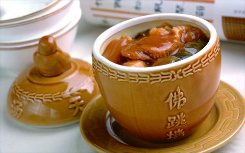
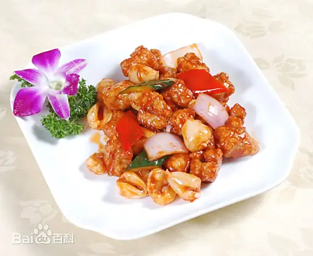
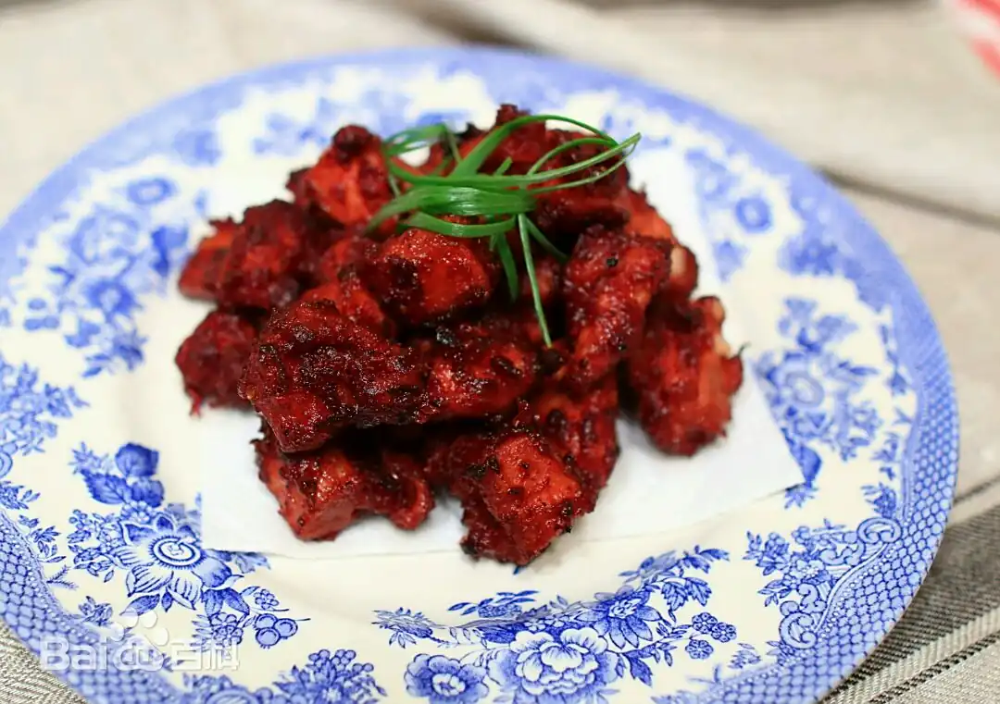

佛跳墙

佛跳墙是福建省的传统名菜，属闽菜系。
其食材丰富，味道醇厚，营养丰富，被誉为"闽菜之王"。
以海参、鲍鱼、鱼翅等多种高档食材，经精心烹制后装入酒坛煨制而成，香气浓郁。
荔枝肉
荔枝肉是福建福州的传统名菜，属闽菜系。
特点是色泽金黄，形似荔枝，酸甜可口，外酥里嫩。
以猪瘦肉为主料，切成荔枝状，经腌制、油炸后与糖醋汁翻炒而成。

红糟肉

红糟肉是闽菜中的经典菜品，以福建特产红糟为主要调料。
以五花肉为主料，加入红糟、料酒等腌制后蒸制而成。
成品色泽红亮，酒香浓郁，肉质酥烂，风味独特。